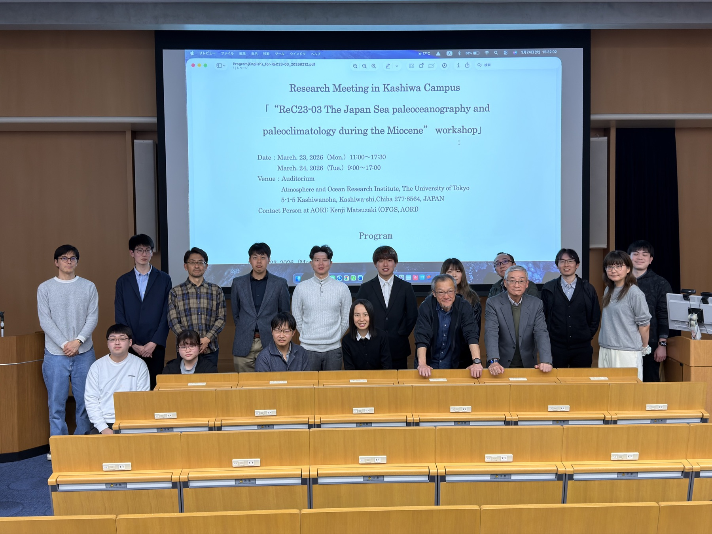
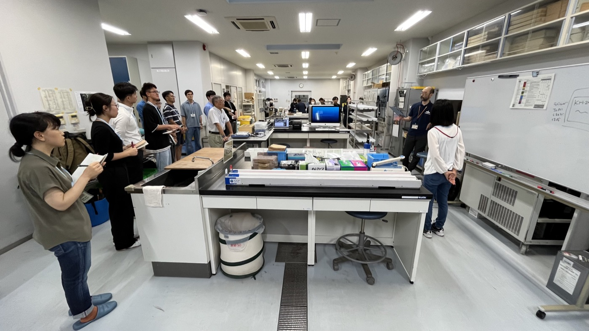
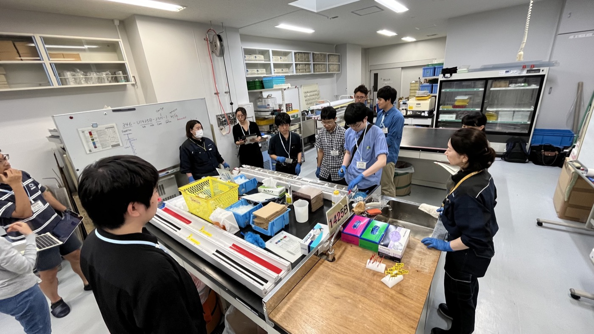
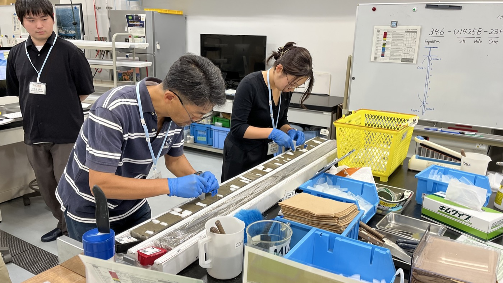
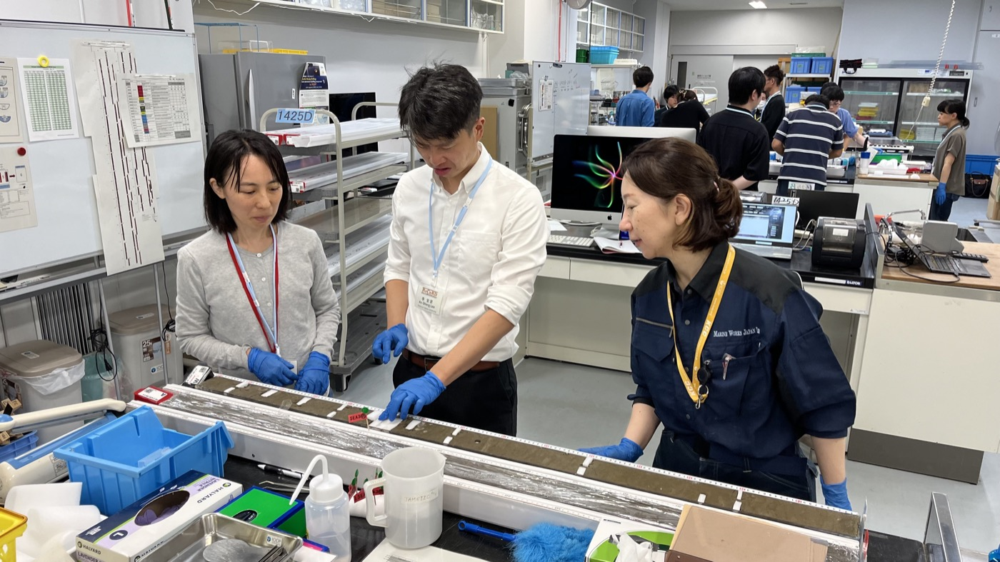
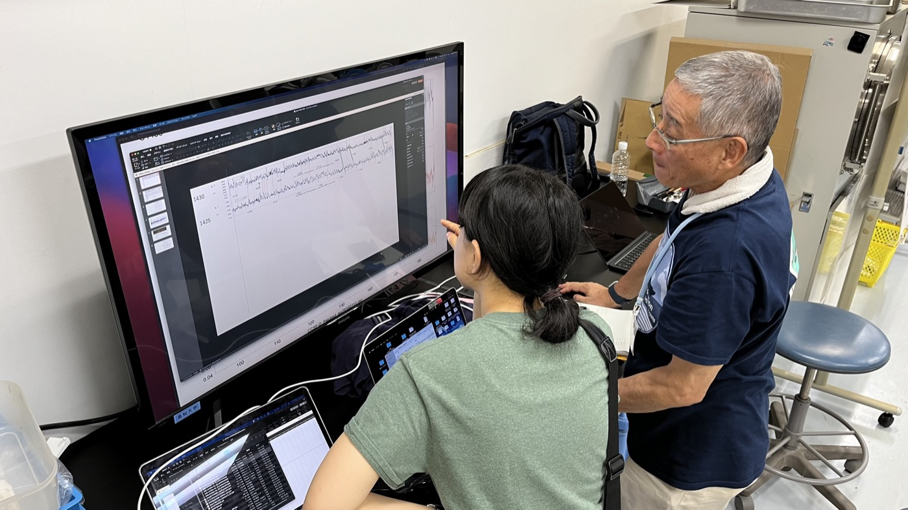

01
26
Project members
across 15 institutions
A J-DESC ReCoRD program re-investigating IODP and ODP legacy cores from the Sea of Japan — reconstructing surface, intermediate and deep ocean conditions across the Miocene. J-DESC ReCoRD プログラムの一課題として、IODP・ODP の日本海レガシーコアを再解析し、中新世の表層〜深層の海洋環境を復元する。

ReC23-03 is a project under the J-DESC Repository Core Re-analysis Program (ReCoRD) that re-investigates legacy IODP and ODP cores from the Japan Sea to reconstruct paleoceanographic and paleoclimatic conditions across the Miocene. Combining XRF core scanning, biostratigraphy (radiolarians, diatoms, foraminifera), tephra correlation, organic geochemistry, biomarker and isotope work, and machine-learning–assisted core image analysis, the team is building an integrated, high-resolution record of the Sea of Japan across the Miocene (~20–5 Ma).
ReC23-03 は、J-DESC のリポジトリコア再解析プログラム（ReCoRD）の一課題として、IODP・ODP 等で取得された日本海のレガシーコアを再解析し、中新世の古海洋・古気候環境を復元するプロジェクトです。XRF コアスキャナーによる非破壊分析、放散虫・珪藻・有孔虫・テフラ等の層序、有機地球化学・バイオマーカー・同位体分析、そして機械学習を用いたコア画像解析を統合し、中新世（約20–5 Ma）の日本海の高解像度の総合記録を構築することを目指しています。
Read the project activity log活動記録を見る · ReCoRD program at J-DESC J-DESC の ReCoRD




